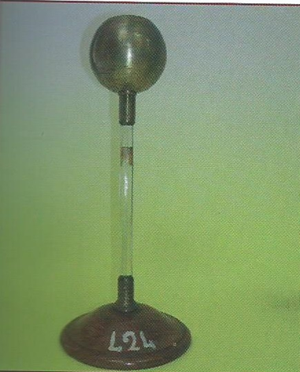

Pozzo di Beccaria
Scuola di provenienza: Liceo Classico P.Colletta, Avellino
Settore: Elettrostatica
Costruttori: Sconosciuto
Materiali: Legno, materiale isolante, ottone satinato
Accessori: Nessuno
Stato di conservazione: Buono
Descrizione: L’apparecchio è formato da una sfera cava di ottone nella quale superiormente è praticato un foro, sostenuta da una colonnina di vetro inserita in una base di legno. La sfera viene caricata elettricamente e tramite il piano di prova (asta isolante con bottone conduttore). Toccando la superficie interna e quella esterna della sfera si dimostra che internamente non vi è alcuna carica elettrica che è tutta distribuita sulla superficie esterna del conduttore; si adopera come schermo elettrostatico.